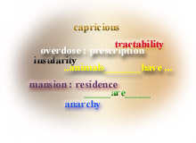

| GRE Test | GRE CAT | GRE Verbal | GRE Math | Analytical |
GRE Verbal
GRE Verbal Section

In GRE Verbal section, you will come across the following types of questions :
- GRE Sentence Completions
- GRE Antonyms
- GRE Analogies
- GRE Reading Comprehensions
GRE Verbal - GRE Sentence Completions
GRE Sentence completions in GRE Verbal measure your:
- ability to understand the logic of a sentence
- recognize words or phrases that complete the meaning of a sentence
You are shown a sentence with either one or two words missing. Your job is to pick the answer choice with the word, or words, that best fits the meaning of the sentence as a whole.
GRE Verbal - Sentence Completion Strategies :
- Read the incomplete sentence and try to fit your own words in before looking at the answer choices.
- Pay attention to grammatical clues.
- Break down sentences with two blanks into parts and analyse each part individually.
- See that both parts of your answer choice fit the sentence correctly.
GRE Verbal - Sentence Completion sample Question:
The pressure of population on available resources is the key to understanding history, consequently any historical writing that does not take cognizance of_________ facts is_________flawed.
A. ecological..marginally
B. demographic..intrinsically
C. cultural..subtantively
D. psychological..philosophically
E. political..demonstratively
Answer: B
GRE Verbal - Antonyms
GRE Antonyms measure your:
- vocabulary
- ability to reason from a given concept to its opposite
You are presented with a single word followed by five answer choices containing words or short phrases. You have to select an answer choice that's most nearly opposite in meaning to the original word. Since the questions often require you to distinguish finer shades of meaning, go through all the possible answer choices before making your selection.
GRE Verbal - Antonyms Strategies :
- Try to define the word precisely
- Look for shades of meaning of the given word
- Make a sentence with it
- Analyse the prefix or suffix to help establish a word's meaning
- Eliminate irrelevant answer choices
GRE Verbal - Antonyms Sample question :
PERSEVERE
A. Take Away
B. Put into
C. Send out
D. Give up
E. Bring forward
Answer: D
GRE Verbal - GRE Analogies
Analogies measure your ability to recognize:
- relationships among words and concepts they represent
- parallel relationships
Here you are presented with a related pair of words followed by five answer choices containing lettered pairs of words or phrases. Select the lettered pair that best expresses a relationship similar to that expressed in the original pair.
GRE Verbal - Analogies Strategies :
- Try to establish a strong relationship between the given pair of words
- Consider relationships of kind, size, spatial contiguity, or degree.
- If more than one of the answer choices seems correct, try to state the relationship more precisely.
- Check for second meanings of the given words
GRE Verbal - Analogies Sample question :
EVAPORATE:VAPOUR
A. petrify:stone
B. centrifuge:liquid
C. saturate:fluid
D. corrode:acid
E. incinerate:fire
Answer: A
GRE Verbal - GRE Reading comprehension
Reading comprehension is the toughest one in GRE Verbal. Many students get a poor GRE Score in GRE Verbal section because of the toughness of the reading comprehension questions. GRE Reading comprehension measures your ability:
- to read with understanding, insight, and discrimination
- to analyze a written passage from several perspectives
Passages are taken from the humanities, social sciences, biological sciences and physical sciences. The passages are of varied lengths, but generally of 75 to 150 lines. The number of questions pertaining to a particular passage could range from 3 to 5.
GRE Verbal - Reading comprehension Strategies :
- Go through the passage once to get the genearal idea of the passage
- Don't try to memorize details but instead pay attention to the topic and the focus of the passage as you read.
- For questions asking you to give the passage a title, look at the first and last lines of the passage for clues.
GRE Verbal - Reading Comprehension Sample question
:
Reading comprehension Passage:
In his 1976 study of slavery in the US, Herbert
Gutman, like Fogel, Engerman, And Genovese, has rightly stressed the
slaves' achievements. But unlike these historians......(rest of the
passage) ........In sum, Gutman's study is significant because it
offers a closely reasoned and original explanation of some of the
slaves' achievements, one that correctly emphasizes the resources that
slaves themselves possessed.
Which of the following is the most appropriate title for the passage, based on its content?
A. The influence of Herbert Gutman on Historians of Slavery in the US
B. Gutman's explanation of how slaves could maintain a cultural Heritage and develop a communal consciousness
C. Slavery in the US: New Controversy about an old subject
D. The Black heritage of Folklore, Music, and Religious Expression: It's growing influence
E. The Black family and extended kinship structure: How they were important for the freed slave
Answer: B
| GRE Test | GRE CAT | GRE Verbal | GRE Math | Analytical |

Free GRE Practice Tests
26 Free GRE Practice Tests. 400 Free GRE Test Questions.Spread The Word / Bookmark this content
Digg this Post to del.icio.us Post to Furl Post to Netscape.comGood GRE Scores
Read
gre test takers gre test experiences and gre success stories. Learn
about their gre test preparation and tips and strategies
Gre Success Stories
GRE
GRE Guide
Graduate Record Examination GRE
GRE Registration
GRE Vocabulary
GRE Word List - Alphabetical Order
GRE Antonyms Word List - Alphabetical Order
GRE Antonyms Word List - Random Order
GRE Practice
GRE Sample Test Questions
GRE Prep
After GRE
Electical Engineering University Rankings
computer science US University rankings
college letter of recommendation
Graduate School statement of purpose